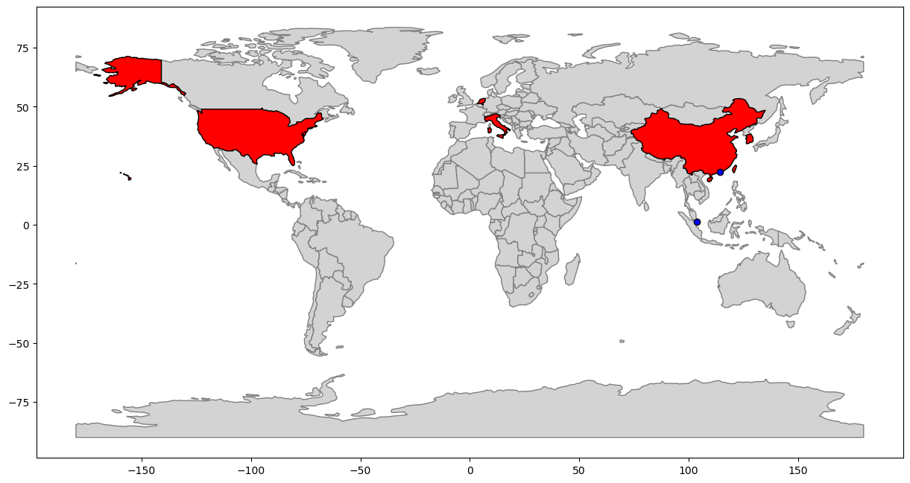
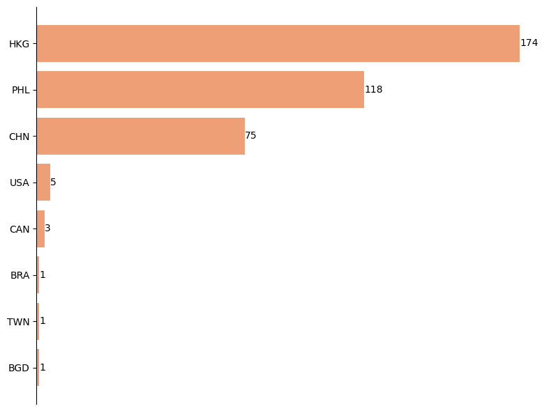
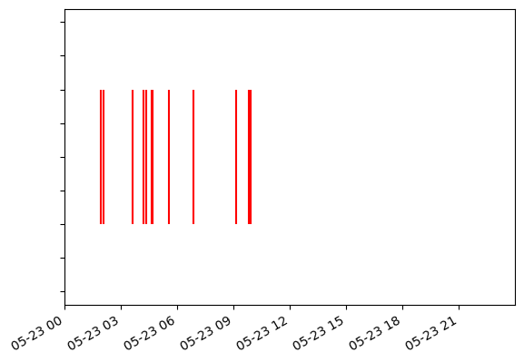
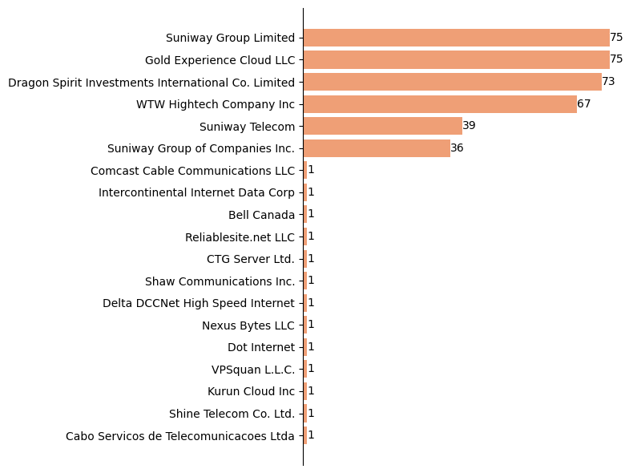
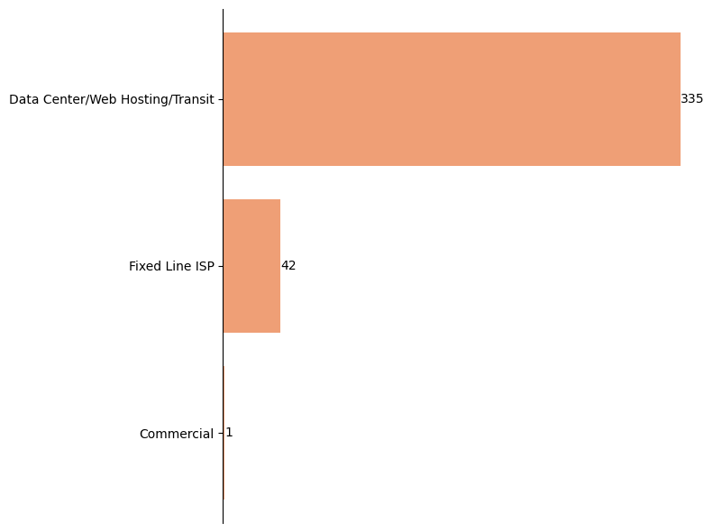
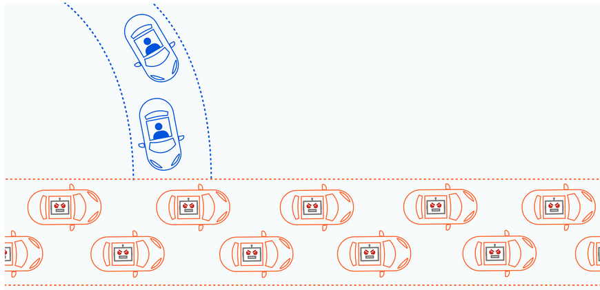
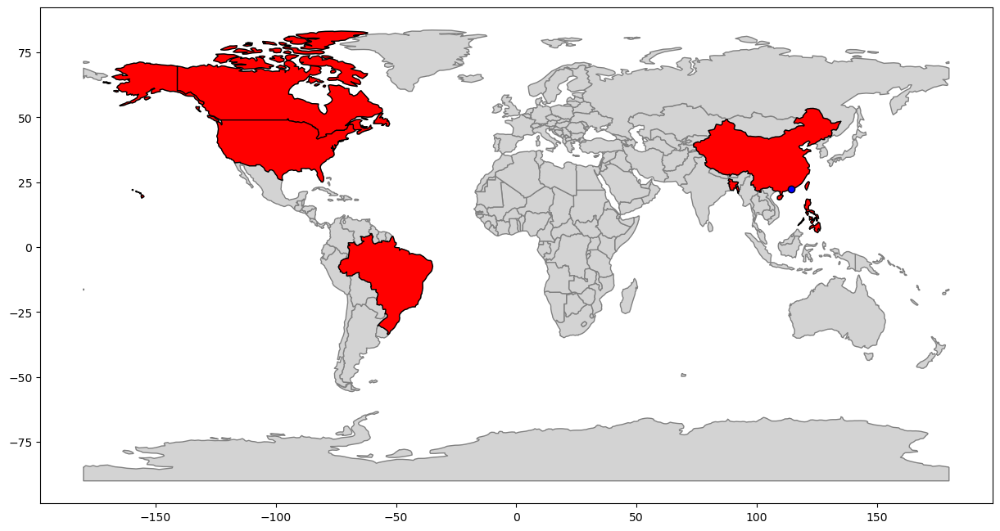
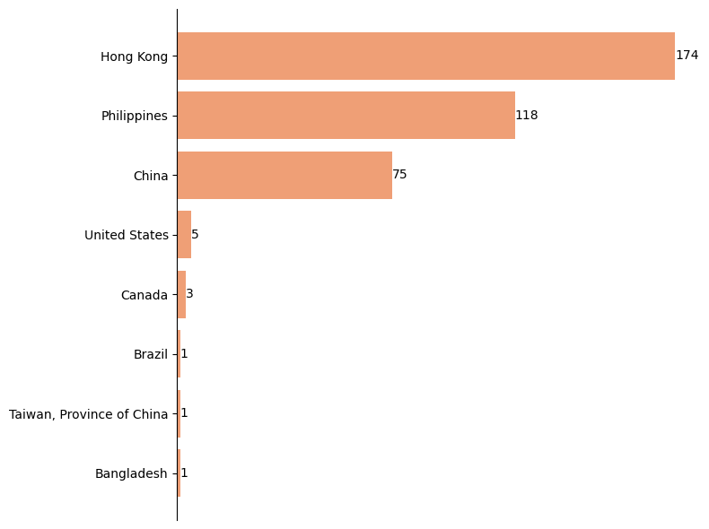
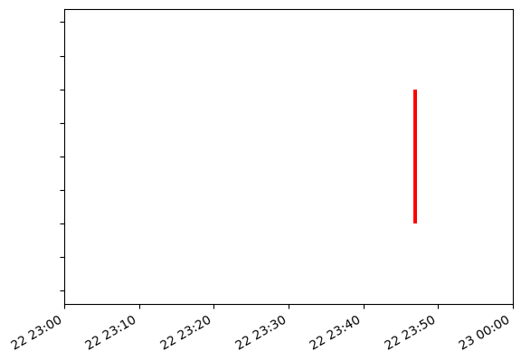
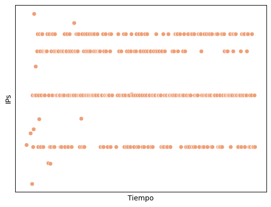

flowchart LR A[Datos \n proporcionados] --> B[Pedido a API] B --> C[Dataset\npara análisis] C --> D[Índices de\nabuso] C --> E[Análisis de\nprocedencia] C --> F[Análisis de\nfrecuencia] C --> G[Análisis de\nISPs] C --> I[Análisis de\nuso]
TIF Redes
1 Análisis de IPs reportadas como atacantes por SSH
Los ataques por SSH (Secure Shell) son intentos maliciosos de comprometer un sistema a través del protocolo SSH.
SSH es muy utilizado porque permite establecer una conexión segura y cifrada entre un cliente y un servidor. Pero, establecida la conexión, puede ser también aprovechado por los atacantes.
Al proporcionarse está información no se especificó la naturaleza del ataque, pero entre los más comunes estan los de fuerza bruta.
1.1 Extracción de IPs
Para la realización de este análisis contaba con una lista de IPs que fueron reportadas por conexiones SSH y ataques DDoS. En este caso extraeré las IPs de SSH haciendo uso de bash y Python.
patron = "[0-9]{1,3}\.[0-9]{1,3}\.[0-9]{1,3}\.[0-9]{1,3}"
!grep -Eo "$patron" data/SSH.txt > data/IPsSSH.txtwith open("data/IPsSSH.txt") as ips:
ipSSH = ips.read()
ipSSH = ipSSH.replace("\n", " ").split()
ipSSH['54.144.244.57',
'188.166.216.223',
'220.94.228.162',
'218.92.0.99',
'116.193.159.2',
'109.117.92.13',
'167.99.112.43',
'89.248.163.219',
'143.198.204.177',
'61.177.173.45',
'8.222.204.225',
'220.135.119.188']1.1.1 Importamos la implementación de las peticiones a la API
Code
!cp ../app/modulos/abuseIPDB.py modulos/abuseIPDB.py
#Importo los modulos necesarios
from modulos.abuseIPDB import AbuseIPDB
import pandas as pd#Construyo el objeto
apiAbuse = AbuseIPDB()Code
import os
import seaborn as sns#Declaro las keys de la info que devuelve mi implementación de requests
keys = ['esPublica', 'estaEnWhitelist', 'scoreAbuso', 'pais', 'codigoPais', 'isp', 'tipoDeUso', 'ultimoReporte']
diccDf = {'ip' : []}
if os.path.isfile("data/ipSSH.csv"):
df = pd.read_csv("data/ipSSH.csv")
else:
for ip in ipSSH:
diccDf['ip'].append(ip)
info = apiAbuse.getInfo(ip)
for key in keys:
if key in diccDf:
diccDf[key].append(info[key])
else:
diccDf[key] = [info[key]]
df = pd.DataFrame(data=diccDf)Code
pd.DataFrame(df.columns)| 0 | |
|---|---|
| 0 | ip |
| 1 | esPublica |
| 2 | estaEnWhitelist |
| 3 | scoreAbuso |
| 4 | pais |
| 5 | codigoPais |
| 6 | isp |
| 7 | tipoDeUso |
| 8 | ultimoReporte |
Listé en Table 1 la información que obtuve de la base de datos de AbuseIPDB para cada IP.
df.head(3)| ip | esPublica | estaEnWhitelist | scoreAbuso | pais | codigoPais | isp | tipoDeUso | ultimoReporte | |
|---|---|---|---|---|---|---|---|---|---|
| 0 | 54.144.244.57 | True | False | 55 | NaN | US | Amazon Data Services NoVa | Data Center/Web Hosting/Transit | 2023-05-24T06:13:13+00:00 |
| 1 | 188.166.216.223 | True | False | 100 | NaN | SG | DigitalOcean LLC | Data Center/Web Hosting/Transit | 2023-05-30T23:00:19+00:00 |
| 2 | 220.94.228.162 | True | False | 100 | NaN | KR | KT Corporation | NaN | 2023-05-30T04:16:49+00:00 |
Code
unameds = [i for i in df.columns if 'Unnamed' in i]
for i in unameds:
df.drop(i, axis=1, inplace=True)
df.to_csv("data/ipSSH.csv", index=False)1.2 Índices de abuso
Code
recuento = df["scoreAbuso"].value_counts().to_dict()
pd.DataFrame(data={"Score": list(recuento.keys()), "Reportes": list(recuento.values())})| Score | Reportes | |
|---|---|---|
| 0 | 100 | 11 |
| 1 | 55 | 1 |
Como se puede apreciar en la tabla de arriba (Table 2), han sido múltiples veces reportadas por distintos usuarios a lo largo del mundo. Esto hace que la base de datos las califique con un score de abuso alto. Por lo tanto, tenemos la certeza de que son IPs que han sido utilizadas con fines malintencionados previamente y que quien proporcionó los datos no fue el único afectado.
1.3 Análisis de procedencia
Code
import geopandas as gpd
import matplotlib.pyplot as plt
import plotly.express as px
import numpy as np
import pycountry
df['pais'] = df['codigoPais'].apply(lambda codigo: pycountry.countries.get(alpha_2=codigo).name)
dfgdp = df.copy()
dfgdp['codigoPais'] = df['pais'].apply(lambda nombre: pycountry.countries.search_fuzzy(nombre)[0].alpha_3)
mapa = gpd.read_file(gpd.datasets.get_path('naturalearth_lowres'))
Note
Todas estas librerias utilizan convenciones, por lo cual es importante checkear que esten presentes todos los paises que queremos plotear
print(np.unique(dfgdp["codigoPais"].loc[~dfgdp["codigoPais"].isin(mapa["iso_a3"])]))['HKG' 'SGP']Pude notar que tanto Hong Kong, como Singapur no estan representadas en el mapa mundi por ser ciudades. Por ello, debo cargarlas desde otro dataset para marcarla.
En Figure 1 se presenta el mapamundi con los países o ciudades-estado de donde provienen los ataques pintados de rojo y azul respectivamente.
Code
paisesMarcados = mapa[mapa['iso_a3'].isin(dfgdp["codigoPais"])]
fig, ax = plt.subplots(figsize=(15, 10))
mapa.plot(ax=ax, edgecolor='grey', color='lightgrey')
paisesMarcados.plot(ax=ax, edgecolor='black', color='red')
ciudades = gpd.read_file(gpd.datasets.get_path('naturalearth_cities'))
singapur = ciudades[ciudades['name'] == 'Singapore']
hongkong = ciudades[ciudades['name'] == 'Hong Kong']
singapur.plot(ax=ax, edgecolor='black', color='blue')
hongkong.plot(ax=ax, edgecolor='black', color='blue')
plt.show()
En la siguiente figura (Figure 2), se puede apreciar el número de IPs que pertenecen a cada uno de los paises, con Singapur encabezando la lista.
Code
counts = dfgdp["codigoPais"].value_counts().rename_axis('pais').to_frame('counts')
counts.reset_index(level=0, inplace=True)
counts = counts.sort_values(by='counts')
fig, ax = plt.subplots(figsize=(8,6))
bars = plt.barh(counts["pais"], counts['counts'], color='#ef9f76')
ax.spines[['right', 'top', 'bottom']].set_visible(False)
ax.xaxis.set_visible(False)
ax.spines['left'].set_color('black')
ax.tick_params(axis='y', colors='black')
ax.bar_label(bars, color='black')
plt.tight_layout()
plt.show()
Code
recuento = df["pais"].value_counts().to_dict()
pd.DataFrame(data={"Pais": list(recuento.keys()), "Reportes": list(recuento.values())})| Pais | Reportes | |
|---|---|---|
| 0 | Singapore | 3 |
| 1 | United States | 2 |
| 2 | China | 2 |
| 3 | Korea, Republic of | 1 |
| 4 | Hong Kong | 1 |
| 5 | Italy | 1 |
| 6 | Netherlands | 1 |
| 7 | Taiwan, Province of China | 1 |
1.4 Análisis de frecuencia
Definí esta tarea para así, tratar de identificar cierto patron asociado a la hora de ataque.
1.4.1 Extracción de información
patron = "[0-9]{1,3}\.[0-9]{1,3}\.[0-9]{1,3}\.[0-9]{1,3}"
!grep -Eo "$patron" data/SSH.txt > data/IPsSSH.txt
patron = "[a-z]{3}\/[0-9]{2}\/[0-9]{4}"
!grep -Eo "$patron" data/SSH.txt >> data/IPsSSH.txt
patron = "[0-9]{2}\:[0-9]{2}\:[0-9]{2}"
!grep -Eo "$patron" data/SSH.txt >> data/IPsSSH.txtwith open("data/IPsSSH.txt") as ips:
data = ips.read()
data = data.replace("\n", " ").split()for i in range(int(len(data)/3)):
data[i] = data[i] + " " + data[int(len(data)/3)+i] + " " + data[(int(len(data)/3))*2+i]
data = data[:int(len(data)/3)]Code
from datetime import datetime, time
diccInfo = {
"IP": [],
"Fecha": [],
"Hora": []
}
eventos = []
for i in data:
diccInfo["IP"].append(i.split()[0])
diccInfo["Fecha"].append(i.split()[1])
mes = 5
dia = int(i.split()[1].split(sep="/")[1])
año = int(i.split()[1].split(sep="/")[2])
h = int(i.split()[2].split(sep=":")[0])
m = int(i.split()[2].split(sep=":")[1])
s = int(i.split()[2].split(sep=":")[2])
diccInfo["Hora"].append(time(hour=int(h), minute=int(m), second=int(s)))
#diccInfo["Hora"].append(i.split()[2])
eventos.append((i.split()[0],datetime(year=año, month=mes, day=dia, hour=h, minute=m)))
dfHora = pd.DataFrame(data=diccInfo)
dfHora["Pais"] = None
for index, row in dfHora.iterrows():
ip = row["IP"]
row["Pais"] = df[df['ip'] == ip].iloc[0]['pais']fig, ax = plt.subplots()
fecha = [evento[1] for evento in eventos]
etiquetas = [evento[0] for evento in eventos]
ax.eventplot(fecha, lineoffsets=0.1, linelengths=0.1, color='r')
ax.set_ylabel(None)
ax.set_yticklabels([])
ax.set_xlim(datetime(2023, 5, 23, 0, 0), datetime(2023, 5, 23, 23, 59))
fig.autofmt_xdate()
En Figure 3 busqué representar los eventos en función del tiempo yu podemos ver, que el sistema atacado registró estas IPs en un solo día (23 de Mayo) durante horas de la mañana.
1.5 Análisis de ISPs
Table 3 muestra cuantos de los reportes corresponden a cada uno de los proveedores de internet.
Code
recuento = df["isp"].value_counts().to_dict()
recuento = pd.DataFrame(data={"ISP": list(recuento.keys()), "Reportes": list(recuento.values())})
recuento| ISP | Reportes | |
|---|---|---|
| 0 | DigitalOcean LLC | 3 |
| 1 | ChinaNet Jiangsu Province Network | 2 |
| 2 | Amazon Data Services NoVa | 1 |
| 3 | KT Corporation | 1 |
| 4 | Pacswitch Globe Telecom Limited | 1 |
| 5 | Vodafone Italia S.p.A. | 1 |
| 6 | FiberXpress BV | 1 |
| 7 | Alibaba.com Singapore E-Commerce Private Limited | 1 |
| 8 | Chunghwa Telecom Co. Ltd. | 1 |
Code
counts = df["isp"].value_counts().rename_axis('isp').to_frame('counts')
counts.reset_index(level=0, inplace=True)
counts = counts.sort_values(by='counts')
fig, ax = plt.subplots(figsize=(8,6))
bars = plt.barh(counts["isp"], counts['counts'], color='#ef9f76')
ax.spines[['right', 'top', 'bottom']].set_visible(False)
ax.xaxis.set_visible(False)
ax.spines['left'].set_color('black')
ax.tick_params(axis='y', colors='black')
ax.bar_label(bars, color='black')
plt.tight_layout()
plt.show()
Figure 4 muestra un recuento de los distintos ISPs que tienen asignadas las IPs.
1.6 Análisis de uso
Table 4 muestra el número de veces que fue declarado cierto uso de una IP.
Code
recuento = df["tipoDeUso"].value_counts().to_dict()
recuento = pd.DataFrame(data={"uso": list(recuento.keys()), "Reportes": list(recuento.values())})
recuento| uso | Reportes | |
|---|---|---|
| 0 | Data Center/Web Hosting/Transit | 8 |
| 1 | Fixed Line ISP | 1 |
Code
counts = df["tipoDeUso"].value_counts().rename_axis('uso').to_frame('counts')
counts.reset_index(level=0, inplace=True)
counts = counts.sort_values(by='counts')
fig, ax = plt.subplots(figsize=(8,6))
bars = plt.barh(counts["uso"], counts['counts'], color='#ef9f76')
ax.spines[['right', 'top', 'bottom']].set_visible(False)
ax.xaxis.set_visible(False)
ax.spines['left'].set_color('black')
ax.tick_params(axis='y', colors='black')
ax.bar_label(bars, color='black')
plt.tight_layout()
plt.show()
Figure 5 permite visualizar los usos declarados de las IPs declarados.
2 Análisis de IPs reportadas por ataque DDoS
Los ataques de denegación de servicio destribuido (DDoS), son intentos de saturar los recursos de un sistema o red, sobrecargando la red con tráfico inesperado.

El foco no es infiltrarse o robar información, sino que busca abrumar y colapsar el objetivo mediante grandes volúmenes de solicitudes.
La característica distintiva de estos ataques es que son “distribuidos”. No se realiza desde una única fuente, sino que se usan múltiples dispositivos como atacantes.
Lo más probable es que quién reporto estas IPs como atacantes haya detectado grandes volumenes o picos de solicitudes en un corto tiempo, levantando sospechas que se podría tratar de atacantes.
Para intentar extraer información de los datos definí el siguiente flujo de trabajo:
flowchart LR A[Datos \n proporcionados] --> B[Pedido a API] B --> C[Dataset\npara análisis] C --> D[Índices de\nabuso] C --> E[Análisis de\nprocedencia] C --> F[Análisis de\nfrecuencia] C --> G[Análisis de\nISPs] C --> I[Análisis de\nuso] C --> H[Visualización \nde distribución]
2.1 Extracción de información
patron = "[0-9]{1,3}\.[0-9]{1,3}\.[0-9]{1,3}\.[0-9]{1,3}"
!grep -Eo "$patron" data/DDOS.txt > data/IPsDDoS.txt
patron = "[a-z]{3}\/[0-9]{2}\/[0-9]{4}"
!grep -Eo "$patron" data/DDOS.txt >> data/IPsDDoS.txt
patron = "[0-9]{2}\:[0-9]{2}\:[0-9]{2}"
!grep -Eo "$patron" data/DDOS.txt >> data/IPsDDoS.txtwith open("data/IPsDDoS.txt") as ips:
data = ips.read()
data = data.replace("\n", " ").split()ips = []
dia = []
hora = []
for i in range(int(len(data)/3)):
ips.append(data[i])
dia.append(data[int(len(data)/3)+i])
hora.append(data[(int(len(data)/3))*2+i])
data[i] = data[i] + " " + data[int(len(data)/3)+i] + " " + data[(int(len(data)/3))*2+i]
data = data[:int(len(data)/3)]Code
data = pd.DataFrame(data={'ip': ips,
'dia': dia,
'hora': hora})
apiAbuse = AbuseIPDB()#Declaro las keys de la info que devuelve mi implementación de requests
keys = ['esPublica', 'estaEnWhitelist', 'scoreAbuso', 'pais', 'codigoPais', 'isp', 'tipoDeUso', 'ultimoReporte']
diccDf = {'ip' : []}
if os.path.isfile("data/ipDDOS.csv"):
df = pd.read_csv("data/ipDDOS.csv")
else:
for ip, i in zip(ips, range(len(ips))):
clear_output()
print(f"{i}/{len(ips)}")
diccDf['ip'].append(ip)
info = apiAbuse.getInfo(ip)
for key in keys:
if key in diccDf:
diccDf[key].append(info[key])
else:
diccDf[key] = [info[key]]
df = pd.DataFrame(data=diccDf)
df["hora"] = data["hora"]
df["dia"] = data["dia"]Code
unameds = [i for i in df.columns if 'Unnamed' in i]
for i in unameds:
df.drop(i, axis=1, inplace=True)
df.to_csv("data/ipDDOS.csv", index=False)2.2 Índices de abuso
Code
recuento = df["scoreAbuso"].value_counts().to_dict()
pd.DataFrame(data={"Score de abuso": list(recuento.keys()), "Reportes": list(recuento.values())})| Score de abuso | Reportes | |
|---|---|---|
| 0 | 0 | 375 |
| 1 | 2 | 2 |
| 2 | 10 | 1 |
Contrariamente de lo esperado, en Table 5, puedo observar que la gran mayoría tienen un score de abuso nulo y las que no, es muy bajo.
Lo más simple sería pensar que estas IPs no hayan atacado a más usuarios, pero considero que es poco probable. Por otro lado, podría deberse a la distribución de este ataque, haciendo que en otros sistemas vulnerados pase desapercibido. Otra opción es que el sistema que los reporto tenga mecanismos deficientes para la detección de posibles ataques.
2.3 Análisis de procedencia
Code
import pycountry
import geopandas as gpd
import matplotlib.pyplot as plt
df['pais'] = df['codigoPais'].apply(lambda codigo: pycountry.countries.get(alpha_2=codigo).name)
dfgdp = df.copy()
dfgdp['codigoPais'] = df['pais'].apply(lambda nombre: pycountry.countries.search_fuzzy(nombre)[0].alpha_3)
mapa = gpd.read_file(gpd.datasets.get_path('naturalearth_lowres'))print(np.unique(dfgdp["codigoPais"].loc[~dfgdp["codigoPais"].isin(mapa["iso_a3"])]))['HKG']En Figure 6 podemos observar el mapamundi y los paises o ciudades-estado de donde provienen las IPs coloreados.
Code
paisesMarcados = mapa[mapa['iso_a3'].isin(dfgdp["codigoPais"])]
fig, ax = plt.subplots(figsize=(15, 10))
mapa.plot(ax=ax, edgecolor='grey', color='lightgrey')
paisesMarcados.plot(ax=ax, edgecolor='black', color='red')
ciudades = gpd.read_file(gpd.datasets.get_path('naturalearth_cities'))
hongkong = ciudades[ciudades['name'] == 'Hong Kong']
hongkong.plot(ax=ax, edgecolor='black', color='blue')
plt.show()
En la siguiente tabla (Table 6), se puede apreciar el número de IPs que pertenecen a cada uno de los paises y una representación gráfica de ello para tener una mejor noción (Figure 7).
Code
recuento = df["pais"].value_counts().to_dict()
pd.DataFrame(data={"Pais": list(recuento.keys()), "Reportes": list(recuento.values())})| Pais | Reportes | |
|---|---|---|
| 0 | Hong Kong | 174 |
| 1 | Philippines | 118 |
| 2 | China | 75 |
| 3 | United States | 5 |
| 4 | Canada | 3 |
| 5 | Bangladesh | 1 |
| 6 | Taiwan, Province of China | 1 |
| 7 | Brazil | 1 |
Code
counts = df["pais"].value_counts().rename_axis('pais').to_frame('counts')
counts.reset_index(level=0, inplace=True)
counts = counts.sort_values(by='counts')
fig, ax = plt.subplots(figsize=(8,6))
bars = plt.barh(counts["pais"], counts['counts'], color='#ef9f76')
ax.spines[['right', 'top', 'bottom']].set_visible(False)
ax.xaxis.set_visible(False)
ax.spines['left'].set_color('black')
ax.tick_params(axis='y', colors='black')
ax.bar_label(bars, color='black')
plt.tight_layout()
plt.show()
2.4 Análisis de frecuencia
Al igual que con los ataques SSH, realicé este parso para tratar de identificar cierto patrón asociado a la hora de ataque.
2.4.1 Extracción de información
Code
eventosDDoS = []
for index, row in df.iterrows():
fecha = row["dia"].split(sep="/")
if fecha[0] != 'may':
print(fecha[0])
else:
mes = 5
dia = fecha[1]
año = fecha[2]
tiempo = row["hora"].split(sep=":")
hora = tiempo[0]
minuto = tiempo[1]
eventosDDoS.append((row["ip"], datetime(int(año), int(mes), int(dia), int(hora), int(minuto))))Code
fig, ax = plt.subplots()
fecha = [evento[1] for evento in eventosDDoS]
etiquetas = [evento[0] for evento in eventosDDoS]
ax.eventplot(fecha, lineoffsets=0.1, linelengths=0.1, color='r')
ax.set_ylabel(None)
ax.set_yticklabels([])
ax.set_xlim(datetime(2023, 5, 22, 23, 0), datetime(2023, 5, 23, 0, 0))
fig.autofmt_xdate()
En Figure 8 se puede osbervar la sucesión de eventos reportados por el denunciante. Pareciese ser una sola línea, pero en realidad es que como se intenta sobrecargar, todas envían datos en un tiempo reducido.
Del gráfico podemos identificar que se recibieron las conexiones el 22 de Mayo rondando las 23:50 horas.
2.5 Análisis de ISPs
recuento = df["isp"].value_counts().to_dict()
recuento = pd.DataFrame(data={"ISP": list(recuento.keys()), "Reportes": list(recuento.values())})
recuento| ISP | Reportes | |
|---|---|---|
| 0 | Suniway Group Limited | 75 |
| 1 | Gold Experience Cloud LLC | 75 |
| 2 | Dragon Spirit Investments International Co. Li... | 73 |
| 3 | WTW Hightech Company Inc | 67 |
| 4 | Suniway Telecom | 39 |
| 5 | Suniway Group of Companies Inc. | 36 |
| 6 | Intercontinental Internet Data Corp | 1 |
| 7 | Bell Canada | 1 |
| 8 | Comcast Cable Communications LLC | 1 |
| 9 | Cabo Servicos de Telecomunicacoes Ltda | 1 |
| 10 | Shaw Communications Inc. | 1 |
| 11 | Delta DCCNet High Speed Internet | 1 |
| 12 | Nexus Bytes LLC | 1 |
| 13 | Dot Internet | 1 |
| 14 | VPSquan L.L.C. | 1 |
| 15 | Kurun Cloud Inc | 1 |
| 16 | Shine Telecom Co. Ltd. | 1 |
| 17 | CTG Server Ltd. | 1 |
| 18 | Reliablesite.net LLC | 1 |
counts = df["isp"].value_counts().rename_axis('ISP').to_frame('counts')
counts.reset_index(level=0, inplace=True)
counts = counts.sort_values(by='counts')
fig, ax = plt.subplots(figsize=(8,6))
bars = plt.barh(counts["ISP"], counts['counts'], color='#ef9f76')
ax.spines[['right', 'top', 'bottom']].set_visible(False)
ax.xaxis.set_visible(False)
ax.spines['left'].set_color('black')
ax.tick_params(axis='y', colors='black')
ax.bar_label(bars, color='black')
plt.tight_layout()
plt.show()2.6 Análisis de uso
recuento = df["tipoDeUso"].value_counts().to_dict()
recuento = pd.DataFrame(data={"uso": list(recuento.keys()), "Reportes": list(recuento.values())})
recuento| uso | Reportes | |
|---|---|---|
| 0 | Data Center/Web Hosting/Transit | 335 |
| 1 | Fixed Line ISP | 42 |
| 2 | Commercial | 1 |
counts = df["tipoDeUso"].value_counts().rename_axis('tipoDeUso').to_frame('counts')
counts.reset_index(level=0, inplace=True)
counts = counts.sort_values(by='counts')
fig, ax = plt.subplots(figsize=(8,6))
bars = plt.barh(counts["tipoDeUso"], counts['counts'], color='#ef9f76')
ax.spines[['right', 'top', 'bottom']].set_visible(False)
ax.xaxis.set_visible(False)
ax.spines['left'].set_color('black')
ax.tick_params(axis='y', colors='black')
ax.bar_label(bars, color='black')
plt.tight_layout()
plt.show()
2.7 Visualización de la “distribución”
import netaddr
def convertirIP(ip):
return int(netaddr.IPAddress(ip))Code
datetimes = [evento[1] for evento in eventosDDoS]
dicc = {"ip": df["ip"],
"datetime": datetimes}dfClusters = pd.DataFrame(dicc)
#Realizo una conversión de datetime a tipo de dato continuo
dfClusters["datetime"] = dfClusters["datetime"].apply(lambda x: x.utcnow().timestamp())
dfClusters["ipStr"] = dfClusters["ip"]
#Convierto las IPs a datos continuos.
dfClusters["ip"] = dfClusters["ip"].apply(convertirIP)Code
sns.scatterplot(data=dfClusters,x="datetime", y="ip", color='#ef9f76')
plt.xlabel("Tiempo")
plt.ylabel("IPs")
plt.xticks([])
plt.yticks([])
plt.show()
Como se puede observar en Figure 10 pareciese ser que a pesar de que se realizaron reportes en horarios distantes, las IPs no ocupan todo el espectro, solo rangos acotados, pudiendose interpretar que son distintos enrutadores de las mismas companías.
Esto permite ver claramente la propiedad de ser “distribuidos”.
2.7.1 Veces que fueron utilizadas las IPs
Code
print("Máximo numero de veces que se uso una IP: ",max(dfClusters["ipStr"].value_counts()))Máximo numero de veces que se uso una IP: 1Como podemos notar arriba, ninguna IP se usó más de una vez para enviar solicitudes al atacado.